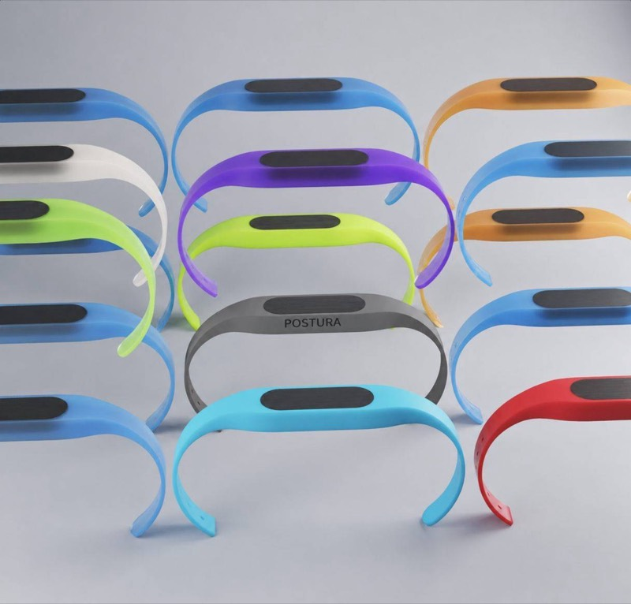
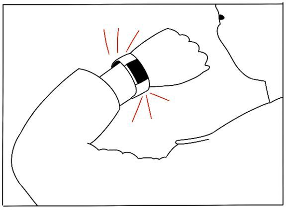
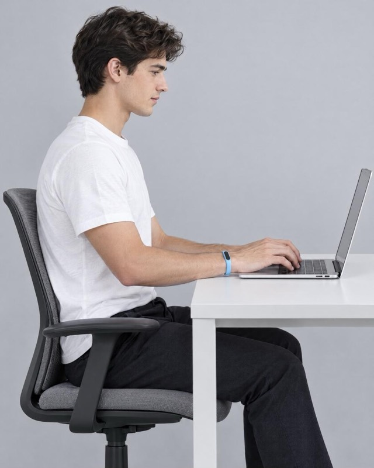
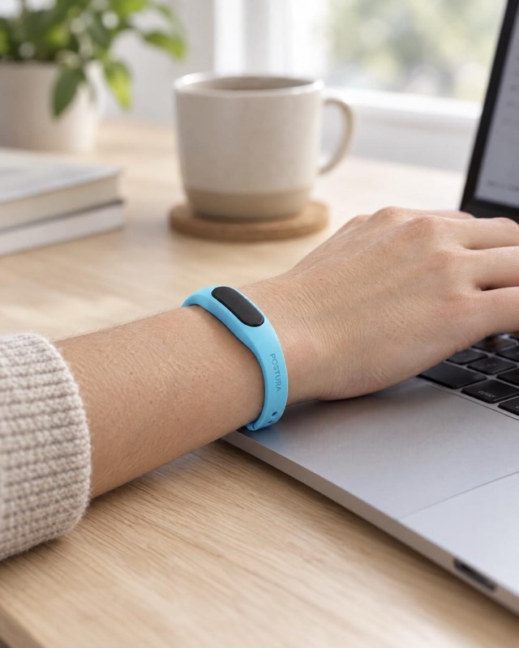

Project 04 · Wearable tech
Postura
An Arduino-programmed wristband that learns the difference between good and poor posture from motion data, then vibrates to nudge you upright before the slouch becomes a habit.

How it works
It learns your slouch.
- 01 · Collect
- Motion data from the accelerometer, gyroscope and magnetometer, labelled good or bad posture.
- 02 · Train
- A classifier built in Edge Impulse and run on the Arduino itself.
- 03 · Nudge
- When it detects a slouch, the band vibrates. No app needed.
Storyboard
Slouch, buzz, sit back up.
The user slowly slouches while working. Postura buzzes on the wrist, and they sit back up before the posture settles into a habit.


Photo: AI-generated visualisation (Higgsfield).
In use
Small enough to forget it’s there.
A slim band with a single module, worn all day at the desk. It only speaks up when your posture drops.
